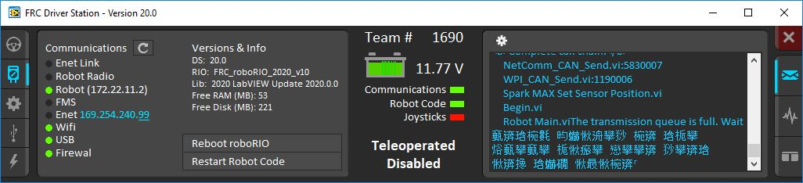

Known Issues
This article details known issues (and workarounds) for FRC® Control System Software.
Open Issues
Driver Station does not detect joysticks at startup
Issue: The Driver Station application does not detect already connected joysticks when it starts up. Connecting joysticks after it is already running works.
Workaround: Connect joysticks after starting the DS, or use the joystick rescan button or the F1 shortcut to rescan for joysticks.
Onboard I2C Causing System Lockups
Issue: Use of the onboard I2C port, in any language, can result in system lockups. The frequency of these lockups appears to be dependent on the specific hardware (i.e. different roboRIOs will behave differently) as well as how the bus is being used.
Workaround: The only surefire mitigation is to use the MXP I2C port or another device to read the I2C data. Acessing the device less frequently and/or using a different roboRIO may significantly reduce the likelihood/frequency of lockups, it will be up to each team to assess their tolerance of the risk of lockup. This lockup can not be definitively identified on the field and a field fault will not be called for a match where this behavior is believed to occur. This lockup is a CPU/kernel hang, the roboRIO will completely stop responding and will not be accessible via the DS, webpage or SSH. If you can access your roboRIO via any of these methods, you are experiencing a different issue.
Several alternatives exist for accessing the REV color sensor without using the roboRIO I2C port. A similar approach could be used for other I2C sensors.
Use a Raspberry Pi Pico. Supports up to 2 REV color sensors, sends data to the roboRIO via serial. The Pi Pico is low cost (less than $10) and readily available.
Use a Raspberry Pi. Supports 1-4 color sensors, sends data to the roboRIO via NetworkTables. Primarily useful for teams already using a Raspberry Pi as a coprocessor.
CAN bus utilization is noisy
Issue: CAN bus utilization as reported live by the DS or as shown in the DS log has significant variation or “spikes” in the data. This is due to the RoboRIO occasionally counting CAN packets in the incorrect time period, so one period will have a much lower utilization than reality and the next a much higher utilization than reality.
Workaround: Zoom in on the DS log plot and look for time periods when the utilization is stable (the spikes will be both above and below this average). The average utilization is the true utilization.
Updating Properties on roboRIO 2.0 may be slow or hang
Issue: Updating the properties on a roboRIO 2.0 without reformatting using the Imaging Tool (such as setting the team number) may be slow or hang.
Workaround: After a few minutes of the tool waiting the roboRIO should be able to be rebooted and the new properties should be set.
Simulation crashes on Mac after updating WPILib
Issue: On macOS, after updating the project to use a newer version of WPILib, running simulation immediately crashes without the GUI appearing.
Workaround: In VS Code, run WPILib | Run a command in Gradle, clean. Alternatively, run ./gradlew clean in the terminal or delete the build directory.
Invalid build due to missing GradleRIO
Issue: Rarely, a user’s Gradle cache will get broken and they will get shown errors similar to the following:
Could not apply requested plugin [id: ‘edu.wpi.first.GradleRIO’, version: ‘2020.3.2’] as it does not provide a plugin with id ‘edu.wpi.first.GradleRIO’
Workaround:
Delete your Gradle cache located under ~$USER_HOME/.gradle. Windows machines may need to enable the ability to view hidden files. This issue has only shown up on Windows so far. Please report this issue if you get it on an alternative OS.
Chinese characters in Driver Station Log
Issue: Rarely, the driver station log will show Chinese characters instead of the English text. This appears to only happen when Windows is set to a language other then English.
Workaround: There are two known workarounds:
Copy and paste the Chinese characters into notepad, and the English text will be shown.
Temporarily change the Windows language to English.
C++ Intellisense - Files Open on Launch Don’t Work Properly
Issue: In C++, files open when VS Code launches will have issues with Intellisense showing suggestions from all options from a compilation unit and not just the appropriate ones or not finding header files. This is a bug in VS Code.
Workaround:
Close all files in VS Code, but leave VS Code open
Delete c_cpp_properties.json file in the .vscode folder, if it exists
Run the “Refresh C++ Intellisense” command in VS Code.
In the bottom right you should see something that looks like a platform (linuxathena or windowsx86-64 etc). If it’s not linuxathena click it and set it to linuxathena (release)
Wait ~1 min
Open the main cpp file (not a header file). Intellisense should now be working
Issues with WPILib Dashboards and Simulation on Windows N Editions
Issue: WPILib code using CSCore (dashboards and simulated robot code) will have issues on Education N editions of Windows.
Shuffleboard will run, but not load cameras
Smartdashbard will crash on start-up
Robot Simulation will crash on start-up
Solution: Install the Media Feature Pack
Fixed in WPILib 2023.2.1
SysId - Robot program crash on startup when using CAN Spark Maxes
Issue: SysId 2023.1.1’s deployed robot program crashes on startup if it was configured to use CAN Spark Maxes.
Solution: Install WPILib 2023.2.1 or newer.
Manually flushing a client NetworkTableInstance does not work
Issue: Calling flush() on a NetworkTableInstance does not cause the data to be flushed to remote subscribers immediately. This issue will be fixed in an upcoming WPILib release.
Workaround: Set the periodic option on the NetworkTable publishers that need a faster update rate:
// Get a DoubleEntry for myTopic and update it with a 10ms period.
DoubleEntry myEntry = table.getDoubleTopic("myTopic").getEntry(0, PubSubOption.periodic(0.01));
// Get a DoubleEntry for myTopic and update it with a 10ms period.
nt::DoubleEntry entry = table.GetDoubleTopic("myTopic").GetEntry(0, { .periodic = 0.01 });